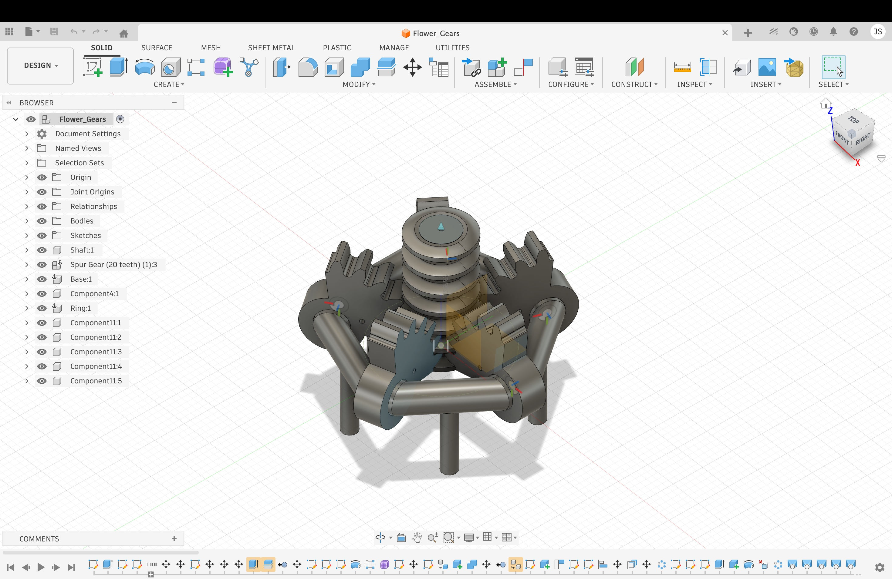
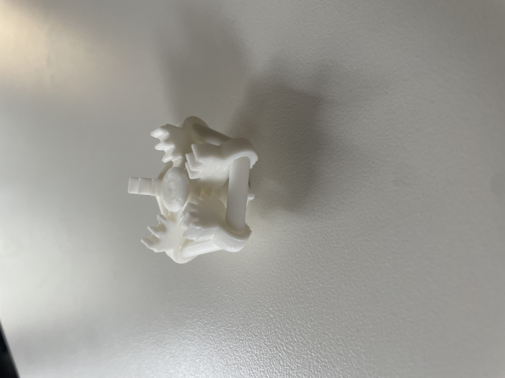
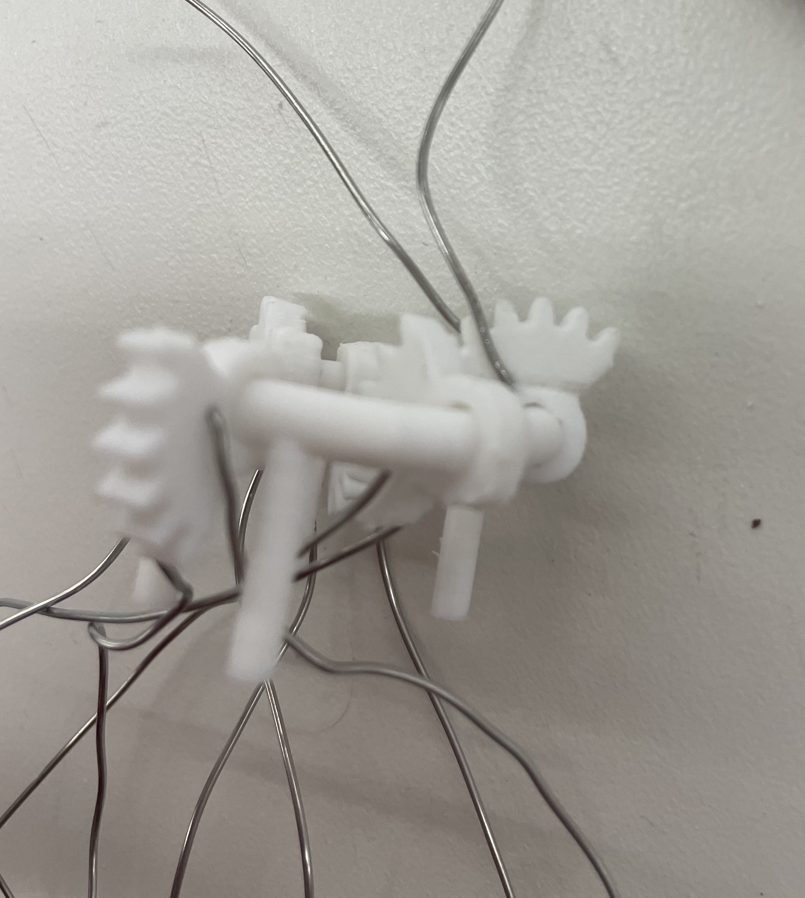
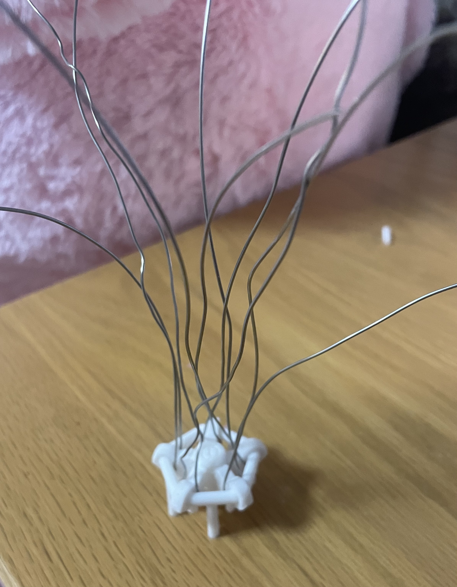
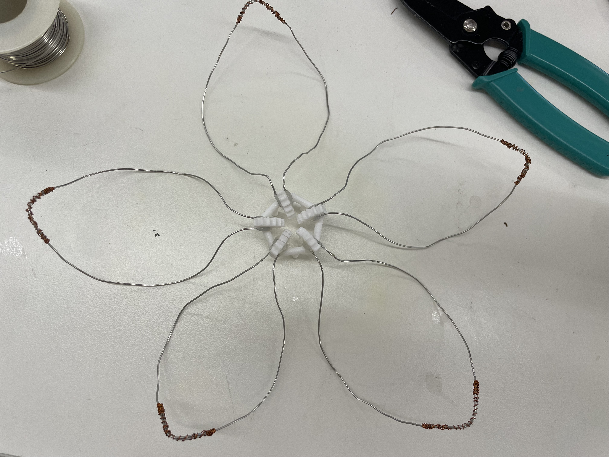
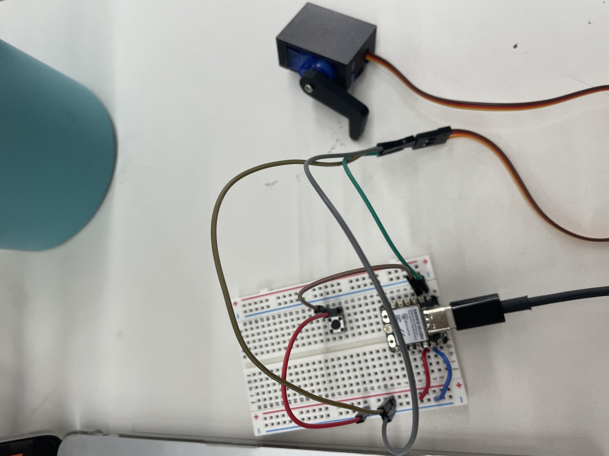
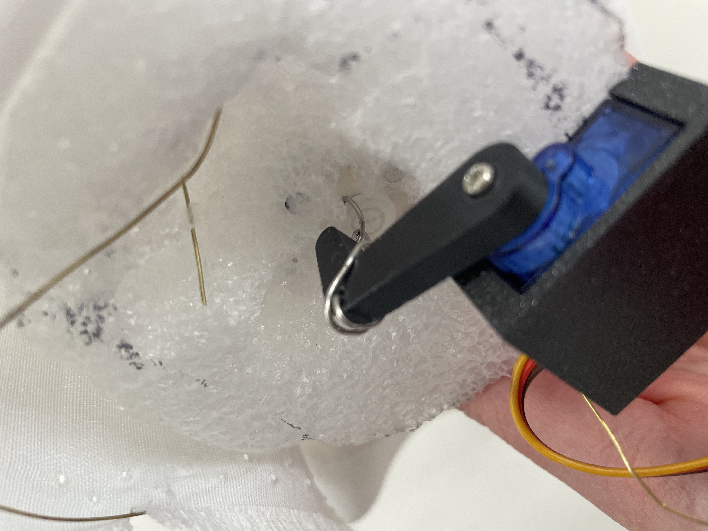
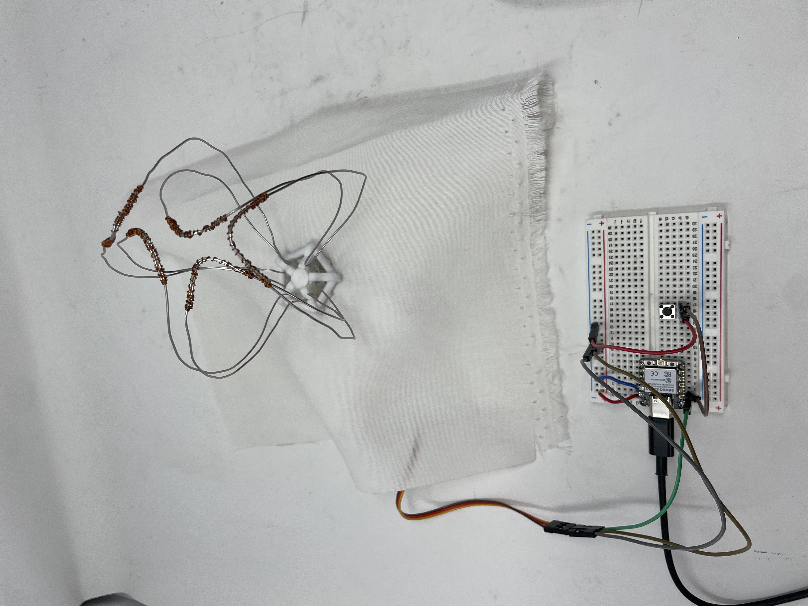

<div class="textcontainer">
<p class="margin"> </p>
<h3>Week 7: Electronic Outputs</h3>
<h4>Assignment: Minimum Viable Product for Final Project - Blooming Flowers Dress</h4>
<div style="text-align: left;">
<video controls style="width: 320px;">
<source src="mvp_demo.mp4" type="video/mp4">
</video>
</div>
<p>For my MVP, I decided to build the base of the flower and focus on getting the petals moving, as well as integrating the flower into fabric to prepare for incorporating the final blooming flower into a full dress for my final project. The video above shows how the blooming output effect can be operated by the switch input. If the switch is pressed once, the flower blooms. When pressed again, the petals close again. In the following, I will lay out the process of fabrication, as well as the mechanism behind this blooming effect and further steps.</p>
<div style="text-align: center;">
<a href="https://a360.co/3PQGTuO" target="_blank"
style="background-color: pink; color: black; padding: 10px 20px; text-decoration: none; border-radius: 5px; font-weight: bold;">
Click here for the CAD gear model
</a>
</div>
<br><br>
<div style="text-align: left;">
<p></p>
</div>
<p>I invested a lot of time to create the CAD model for the gear mechanism and went through multiple iterations before 3D printing the gears. Before modeling the gears, I thought a lot about what mechanisms I could employ to create a light and small design for the petal movement mechanism. Through rough measurements on paper, I determined the size I wanted the gears to be and went into exploring potential mechanisms. I was inspired by the rack and pinion mechanism. However, since I wanted to make all five petals move at the same time, I made the shaft in the middle a cylinder with rings, which I adjusted to the size of the gear teeth. In Fusion, I created joint movement for the shaft and the gears around it. I also attached simple petal structures to determine how many gears and rings I would need for the required angle of movement and later removed the petal structures, since I did not want to 3D print the petals to minimize the weight of the design and make the petals look more realistic. After having the shaft and the gears, I realized that the design was floating and needed holes in the gears to place a ring around the shaft that holds the gears in place. Here, I made sure to make the holes in the gears slightly bigger than the ring so that it moves around the ring, while ensuring that it is not too big to slip around the ring. For higher stability and assurance that each gear stays in place, and to allow the rings to move around the ring, the ring is made out of multiple straight parts rather than including curvature. In addition, I added stands to the ring for more support. Primarily, I added these thin and long stands to enable the incorporation of the flower structure into the fabric later. Lastly, I added a hole into the shaft to attach a wire to the shaft. When this wire is pushed up, the shaft moves up and the gears move along the shaft in the middle. That way, the petals are intended to move down and open. Whereas when the wire is pulled down, the gears close along the shaft again so that the petals come back up again. I also added small holes in each gear that are based on the diameter of the wire I wanted to use for the petals.</p>
<div style="text-align: left;">
<img src="3d.jpeg" style="width: 320px;">
</div>
<div style="text-align: left;">
<p></p>
</div>
<p>The picture above shows the second attempt at 3D printing the flower. In the first iteration, the gears were not moving at all because I had not made the holes for the ring structure large enough, so the gears were fully attached to the ring with no spacing for movement. This prevented any movement. I adjusted the measurements in the design and 3D printed it again, which provided the base of the movement through the shaft that can be taken out and the gears that move freely around the ring that stands on the longer structures.</p>
<div style="text-align: left;">
<p></p>
</div>
<p>The holes I had added in the gears allowed for attaching the wire, which later formed the petals. However, after pulling the wire through the hole and manually moving the mechanism, I realized that the wires were not securely attached and therefore could not translate into the blooming effect. Therefore, I added a little blob of hot glue to ensure that the wire is fully attached to the gears. The combination of the attachment through the hole and the glue delivered the necessary stability.</p>
<div style="text-align: left;">
<p></p>
</div>
<p>This provided the gear mechanism with a wire attached to each of them. However, the wires were still open at the top and needed to be shaped.</p>
<div style="text-align: left;">
<p></p>
</div>
<p>I used pliers to form the wires into petal shapes. Subsequently, I tried to solder the open ends but realized that I had made the mistake of not checking the material of the wires prior to attaching them (I still have not found out what material they are). The wires could not be soldered, which is why I wrapped a thin wire around the ends to attach the open wire ends and finish the base of the petals that way.</p>
<div style="text-align: left;">
<p></p>
</div>
<p>To create the movement, I built the circuit, as can be seen above, to move a servomotor with a little arm attached to it. I included a little switch to operate the motor. The code ensures the slow movement of the motor arm, which I adjusted after multiple tries and observation of the petal movement. I also adjusted the angle based on observation to ensure that the motor does not move too far but also provides sufficient movement for the full closure and opening of the flower. Moreover, the code ensures that one click of the switch opens the flower and that it closes only when the switch is pressed again. In the following, I will present my code:</p>
<h4>Arduino Code</h4>
<pre style="background: transparent; color: black; font-size:14px; line-height:1.4; border:none; padding:0; margin:0;">
<code style="background: transparent; color: black;">
#include &lt;ESP32Servo.h&gt;
// Declare a class to control both the button (input) and servo (output)
class ButtonServoController {
private:
int servoPin;
int buttonPin;
Servo myServo;
int closedPos;
int openPos;
bool isOpen;
int lastButtonState;
int currentPos;
int targetPos;
unsigned long lastMoveTime;
unsigned long lastDebounceTime;
public:
ButtonServoController(int sPin, int bPin, int cPos, int oPos)
: servoPin(sPin),
buttonPin(bPin),
closedPos(cPos),
openPos(oPos),
isOpen(false),
lastButtonState(HIGH),
currentPos(cPos),
targetPos(cPos),
lastMoveTime(0),
lastDebounceTime(0) {}
void begin() {
pinMode(buttonPin, INPUT_PULLUP);
myServo.attach(servoPin);
myServo.write(closedPos);
}
void update() {
handleButton();
moveServoVerySlow();
}
private:
void handleButton() {
int currentButtonState = digitalRead(buttonPin);
if (lastButtonState == HIGH &amp;&amp; currentButtonState == LOW) {
if (millis() - lastDebounceTime &gt; 250) {
isOpen = !isOpen;
if (isOpen) {
targetPos = openPos;
} else {
targetPos = closedPos;
}
lastDebounceTime = millis();
}
}
lastButtonState = currentButtonState;
}
void moveServoVerySlow() {
if (millis() - lastMoveTime &gt; 40) {
lastMoveTime = millis();
if (currentPos &lt; targetPos) {
currentPos++;
myServo.write(currentPos);
}
else if (currentPos &gt; targetPos) {
currentPos--;
myServo.write(currentPos);
}
}
}
};
int servoPin = D0;
int buttonPin = D1;
ButtonServoController controller(servoPin, buttonPin, 0, 55);
void setup() {
controller.begin();
}
void loop() {
controller.update();
}
</code>
</pre>
<div style="text-align: left;">
<p></p>
</div>
<p>After creating the gears and the circuit for the servomotor, it was time to attach the motor to the gear mechanism and embed the mechanism into fabric. First, I took some white fabric and created holes through which I was able to push the stands of the gear mechanism. I also added a hole in the middle to enable the upward and downward shaft movement. As the stands were slightly sticking out of the fabric on the other side and did not seem fully secured, I thought about adding some padding to the back of the fabric right under the gear mechanism. In addition, I needed to design a little home for the motor. To achieve both these goals simultaneously, while keeping a most lightweight solution in mind, I decided to use foam. This allowed for pushing the remainder of the stands of the gear ring into the foam. In the middle of the foam, I added a hole to allow the shaft to move up and down freely and to attach the wire to the motor. I drilled a little hole into the arm of the servomotor before screwing the arm onto the motor. That way, I could push the wire through the hole of the motor arm. For more stability, I wrapped the rest of the wire around the arm and tightened it with pliers. I had to experiment in this step, as the amount of wire between the shaft and the motor arm was crucial for determining how much the petals were going to move up and down. As the top of the wire is attached to the shaft and the bottom to the motor arm, the upward movement of the motor arm also pushes up the shaft, which in turn moves the gears, opening up the petals. When the button is pressed again and the motor arm moves back down, it pulls the wire back down as well, which moves the shaft downward, closing the gears around the shaft again and closing the flower petals. I measured the motor and its arm to create a fitting home in the foam for the motor and its arm. The image above shows the foam part that is directly attached to the gears, which cannot be seen in the image, as they are on the other side of the fabric. The stands can be seen slightly poking through the foam, as the gears are attached to the fabric and foam that way. The picture also does not show the second foam part, which covers the motor and creates the motor home, as I wanted to show the internal mechanism before attaching the two pieces of foam around the motor. This allowed for a lightweight solution and securing the motor in place.</p>
<div style="text-align: left;">
<p></p>
</div>
<div style="text-align: left;">
<img src="flower_oscillator.jpeg" style="width: 320px;">
</div>
<p>These steps provided the circuit and flower incorporated into fabric, as shown above. Due to the wire and the light foam materials, the structure was surprisingly secure and is well supported by the fabric. The oscilloscope shows a repeating servo control waveform with a fixed period of about 20 ms, corresponding to roughly 50 Hz. The pulse width varies between about 1 and 2 ms and changes as the movement angle changes and the flower opens up or closes. Because my code moves the servo gradually from 0° to 55° in small increments, the pulse width increases as the flower opens and decreases step by step as it closes.</p>
<div style="text-align: left;">
<video controls style="width: 320px;">
<source src="mvp_demo.mp4" type="video/mp4">
</video>
</div>
<p>For the final project, I might consider using a different housing for my motor other than foam, but I found the foam to be the most convenient, light, and compatible with fabric so far. I will also look for wires that can be soldered instead of attaching them with wires. For this MVP, I had already attached the wires. In terms of immediate next steps, I will design the petals to hide the wires before our design workshop, which I am very excited about. For that purpose, I obtained crepe paper that I will paint with acrylic paint. The exterior of the petals is supposed to be white and match the color of the dress, whereas the internal petal side will be colorful to maximize the surprise effect when the petals open.</p>
</div>